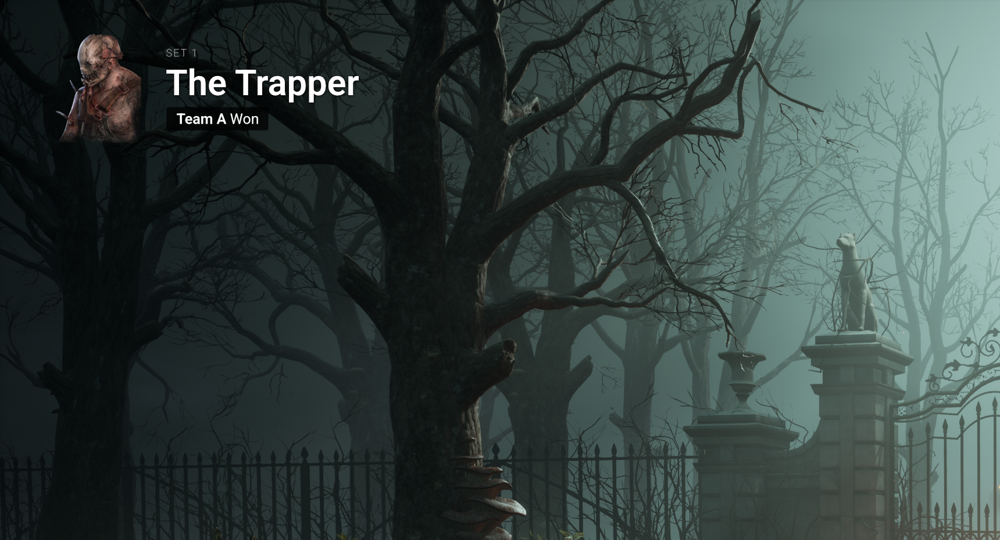
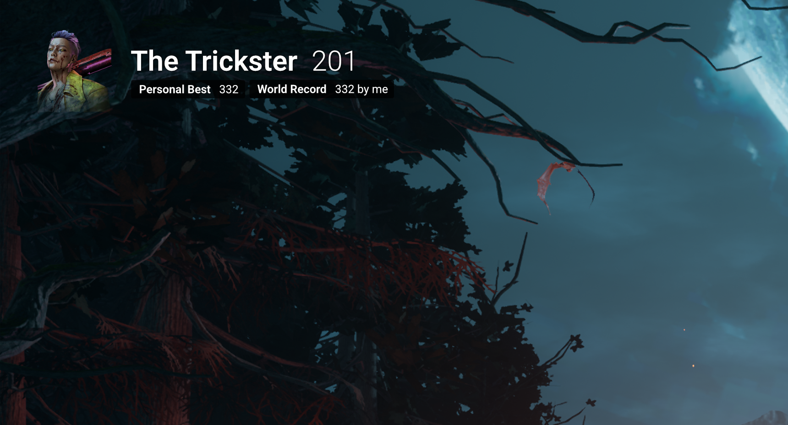
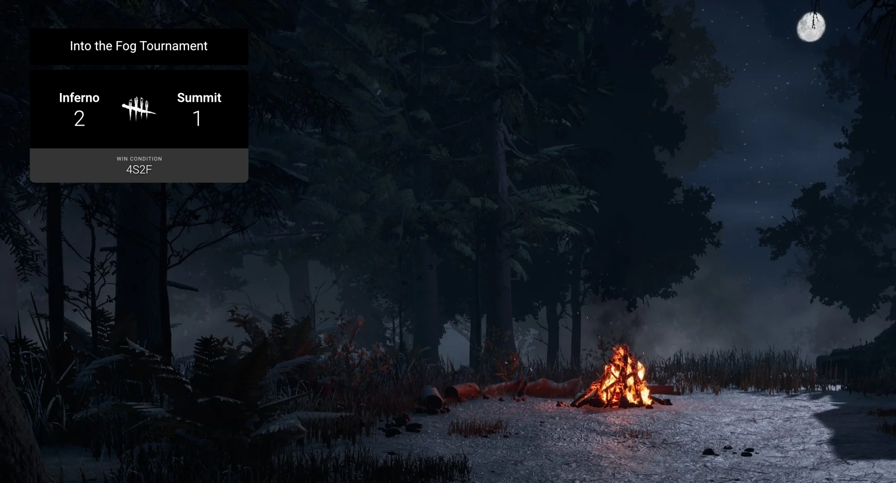
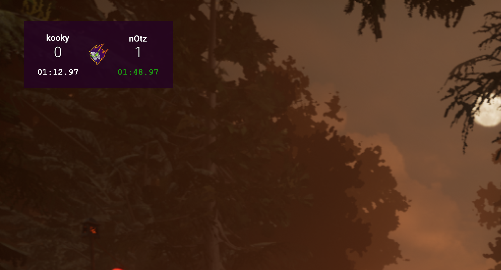
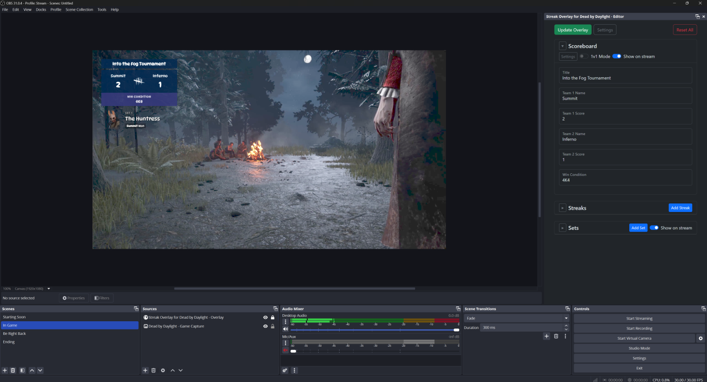

New
Feature

Keep your viewers in the loop
Use the Sets feature to show which killers you're playing today. Let viewers know who's playing first and who won. From Bo1 to Bo7, add as many sets as you want and they'll be displayed cleanly in a carousel on your stream.
Feature

Show off your commitment and skill
No more ugly text sources that break your flow. Add streaks and update them live with just a single click.
Features
- Just one click to add a win and update the live overlay, no manual fumbling with text sources or shortcuts
- Add an unlimited number of streaks
- Easily hide and show individual streaks
- Add badges to track your personal best
- Fully customizable design: choose your font, size, color, position, and more
Feature

Track your tournaments easily
Let your viewers focus on the action with a scoreboard that shows what they want to see, inspired by the scorebug designed by Apple TV+ for the MLB.
Features
- Replace the default logo with your team logo for ultimate recognition
- Make it completely your own: change the colors, fonts, and more
Feature

Focus on outrunning your opponent in 1v1 Mode
Flick the switch on the scoreboard to enter 1v1 Mode. Forget LiveSplit and time your runs with just one keypress; the scoreboard updates itself.
Features
- No more LiveSplit: 1v1 Mode adds timers to the scoreboard for a better competitive experience
- Time your 1v1s, switch sides, and assign points with just one keypress
Feature

Manage your overlay from your streaming software
Keep your OBS fullscreen: fully manage and customize your overlay from your OBS, XSplit, or any other streaming software.
Completely customizable
Ditch the paid app that makes your stream look like everyone else's. Tweak the design to your liking with a fully customizable overlay.
Always free
No payments, no subscriptions, no ads, no tracking, no BS. Just a good app that works.